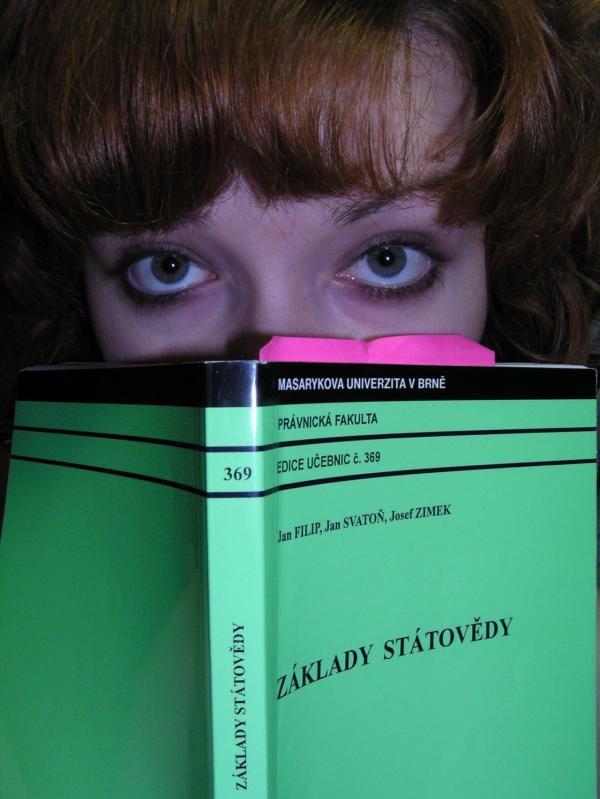

Jsem flákač. Přiznávám to narovinu :D. Naprostou většinu svého života koukám, jak bych se nejlíp vyhnula jakékoliv práci navíc. A tak nějak nechápu, jakým nedopatřením a záchvatem iniciativy jsem se sama navezla do dobrodružství, o kterém vám teď hodlám vyprávět :-)…
Letos mi rozvrh vyšel na ubohé dva dny v týdnu a asi jsem se necítila dostatečně vybitá či co, že jsem se začala předčasně poohlížet po nějaké praxi v advokátním kanclu. Navíc se mi začalo zdát, že ve škole končí etapa úvodní šedé teorie a konečně se mi podaří přičichnout k zelenému právnickému řemeslu :-)…První pokus nevyšel, ale napodruhé už to klaplo a já si to jednoho krásného listopadového rána zamířila do kanceláře tatího spolužáka ze studií. Zdánlivá idylka, že. Až na to, že jsem předchozí noc naspala s bídou 5 hodin (dosud jsem totiž žila v omylu, že právníci nechodí do práce dřív jak na 10 :D !!!), usoudila jsem, že jsem včera měla zůstat jen u jednoho piva, nemohla jsem mluvit a vůbec jsem měla sto chutí vrátit se zpátky do postele, k čemuž mě inspirovaly hloučky studentů vesele pokuřující před průmyslovkou. Naštěstí zodpovědnost převážila nad dávnými záškoláckými pudy :D…kancl jsem našla bez problémů. Pan magistr mě mile přivítal, nabídl mi kafe, optal se, co dělá tatí a nabídl mi tykačku :D. No proč ne :D. Mezitím za ním dorazil nějaký mladý týpek s Codexis školením. Tak se mě zeptal, jestli můžu nastoupit už dneska. Vzhledem k tomu, že gaster se vzpamatoval, na tuto lákavou nabídku jsem nemohla nekývnout :D. Jen kdyby se mi proboha nechtělo tak spát :D…Na hodinku jsem dostala volno, než si pořeší ten Codexis, takže jsem se šla provětrat do Lužánek mezi pejskaře a nadšeně smskovala Terce a Pavči první růžové dojmy z praxe :D.
A pak to teda začlo :D. Instalace Codexisu, seznámení s děsivou šedou skříní co umí kopírovat, skenovat a spoustu dalších věcí, které vůbec nechci znát, převádění souboru do pdf a následně jejich vypalování na cdčko…týjo, a kde je to právo :O ?? Po prvních dvou hodinách, během kterých jsem totálně zapomněla na to, že se mi chce spát, jsem si celá zpocená říkala, že tohle teda opravdu nepůjde :D. Navíc jsem se většinu času spíš sama domýšlela, co že to mám vlastně přesně dělat, protože pan magistr moc nevzal na vědomí, že jsem ještě nikdy na žádné praxi nebyla :D.
Mezitím došel nějakej klient a já dostala za úkol najít ve stohu papírů jeden, který půjdu ověřit k notáři. Vlastně jsem vůbec nevěděla, co mám hledat, takže jsem pro jistotu nachystala všechny složky se jménem dotyčné firmy a v klíčové chvíli sáhla po té správné :D…uff, shrábla jsem peníze na notáře a s radostí vymázla ven, že to teda půjdu ověřit. Vzhledem k tomu, že jsem dostala jen velmi kusé instrukce, kde mám notáře najít, cesta se změnila v pátrací akci. Nakonec jsem vlezla spíš čirou náhodou do budovy jakési realitky, kde jsem uvnitř na ceduli skutečně našla jméno notářky - akorát teda nechápu, proč tu ceduli nemají zvenku -jsem snad vědma ?? Propříště jsem se rozhodla, že budu rovnou veškeré info gůglit, protože nenajít ani notářku, to už bych si vážně musela připadat jako pěkný lempl :D. Měla jsem ještě za úkol stavit se na poště pro kolkové známky, ale vzhledem k tomu, že poštu jsem široko daleko neviděla a gůgl nebyl po ruce, poptala jsem se u notářky. Tam mi poradili, že musím do města, protože tady na poště za rohem mají zavřeno.
Vydala jsem se s lejstrem zpátky do kanclu, kde už na mě čekala další mise - zkompletovat jakýsi obchodní návrh na výmaz, očekovat na interentu, jestli už výmaz náhodou neproběhl, okolkovat a šup s tím na podatelnu. Protože opravdu neznám všechny justiční instituce tady v Brně :D, radši jsem honem zagůglila, abych věděla, kam budou mé kroky směřovat tentokrát, a vduchu se domýšlela, co se ode mě přesně očekává. Očekovala jsem obchodní rejstřík, sbalila peníze, lejstra a cédéčka a mazala na šalinu, kde se se mnou dala do řeči jakási stařenka (Potřebovala poradit, jak se dostane ke krematoriu :D…), takže jsem se už poněkolikáté za ten den zatvářila, že něco vím a vduchu doufala, že to vím správně :D. Tak jsme aspoň daly řeč, jaká je v Brně zima :D, já na Čáře vystoupila a rovnou zamířila k okýnku na párek - nějak jsem z té práce dostala hlad :D…Zatímco jsem krvelačně ukusovala párek z rohlíku, druhou rukou s modrýma prstama (zjistila jsem, že jsem celou cestu z nervozity v kapse cupovala modrý obal od Hašlerky :D) jsem Pavči smskovala, jak se vyvíjí moje praxe. Brno - střed je pro mě španělská vesnice i po těch třech letech života tady, takže jsem Poštovskou našla opět spíš náhodou. Bylo to tam tak obří a mě se tak nechtěla číst ta velká informační tabule, že jsem se radši rovnou šla zeptat k info-okýnku, kde se tady dají koupit kolky. Zaměstnávají tam hrozně milou paní - až něco nebudete vědět, klidně se tam běžte zeptat, doporučuju :D !! Na poště jsem olízala a nalepila kolky :D a vydala se na podatelnu splnit nejdůležitější část dnešní mise…

Šedivá je všechna teorie…:D
V kontrastu s milou info-paní z pošty jsem na obchodním soudě narazila na pěkně protivnýho sekuriťáka, co se na mě koukal, jako bych v tašce pašovala kdovíco a ještě se mě ptal, jestli u sebe nemám nůž :D. Kdybych měla, už ho má dávno zaražený v zádech, protiva ! Na podatelně jsem zanechala lejstra, vyfasovala razítko na kopie, rozloučila se sekuriťákem 8-) a mazala pryč. Tímto jsem měla splněno, má mise skončila a já byla na sebe hrozně pyšná, že jsem to všecko zmákla :D !!! Tomu se říká euforie :D !
Suma sumárum to byl vydařený den, z kterého mám spoustu nových praktických poznatků, což je asi účel každé pořádné praxe :-)…Domů jsem dorazila tak hotová, že jsem do sebe akorát naházela zbytek těstovinového salátu ze včerejška, padla do postele a za zvukové kulisy Ordinace v růžové zahradě během pár minut vytuhla jako nemluvně :D…což myslím hovoří za vše :D. Law’s not dead :)) !!!
Komentáře (1)
Komentáře jsou uzavřené.